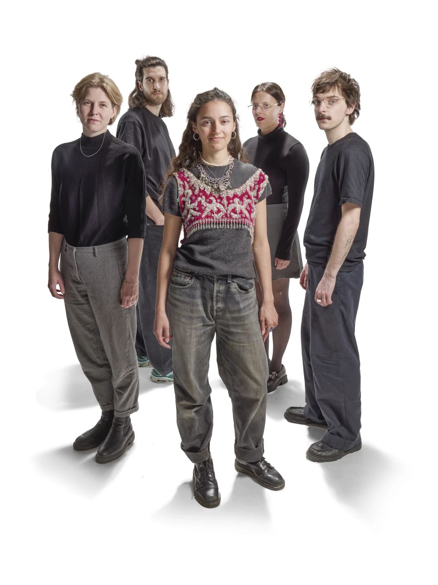
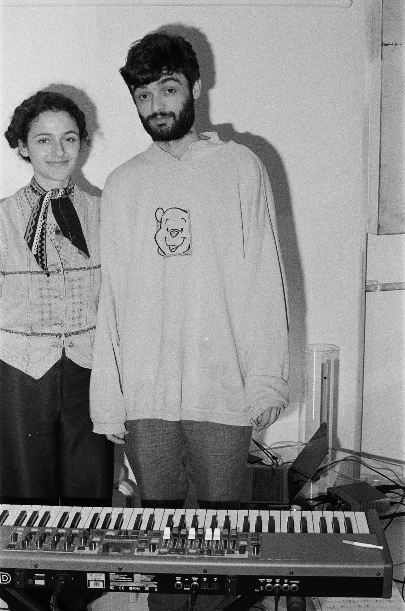

sara el hachimi quintet

sara el hachimi
(as, fl, voc)
jaka arh
(ts)
dshamilja kalt
(p, synth)
tabea kind
(b)
lucas zibulski
(dr)
Sara El Hachim's music combines elements of jazz and singer-songwriter styles and is characterized by a spirit of experimentation.
Inspired by artists such as Samora Pinderhughes, Saya Gray, Esperanza Spalding, and Wayne Shorter, her work focuses on:
expression, honesty, and reflection.
The pieces process emotions and experiences through music and lyrics. With floating melodies, pulsating rhythms, and an unobtrusive groundedness, the quintet creates a warm, intimate sound that touches the listener and leaves room for discovery.
The formation of vocals, alto and tenor saxophone, piano, synthesizer, bass, and drums offers an authentic, poetic soundscape that seeks to heal and connect.
Sara El Hachimi recognizes in music the power of communication that supports us and each other. Her compositions are philosophical, inviting, and never didactic, which makes them particularly authentic.
The quintet invites us to be in the moment—human, awake, and close.
Their music is an expression of authenticity and emotional depth that touches the audience and inspires reflection.
summer thyme awareness
sara el hachimi
(as, fl, voc)
szuzsanna szylagyi
(harp)
gabrielle smart
(bassoon)
álvaro ocón
(tr)
iannis obiols
(p)
paddy fitzgerald
(b)
mehmet ali simaili
(dr)
Sara El Hachimi weaves harp, bassoon, trumpet, saxophone, flute, vocals, piano, double bass, and drums into a vibrant and distinctive sound world.
Her compositions draw on old fairy tales, jazz, and singer-songwriting, as well as the imaginative influences of artists like Clarissa Connelly and Ravel.
With curiosity and a sense of storytelling at the core of her music, she invites listeners on a journey of discovery—one where...
unexpected textures, playful contrasts, and rich atmospheres unfold with each piece.
sara el hachimi & iannis ov

sara el hachimi
(as, fl, voc)
iannis obiols
(p)
The duo Sara El Hachimi & Iannis OV (Iannis Obiols) creates a warm yet mysterious musical world, blending playful soundscapes with a constant curiosity for new jazz-inspired colors.
Their original music feels intimate and atmospheric while inviting listeners into unfamiliar wavelengths.
With a strong sense of improvisation and a love for unexpected turns, each piece becomes a small journey of discovery
—
accessible, multilayered, and always full of character.